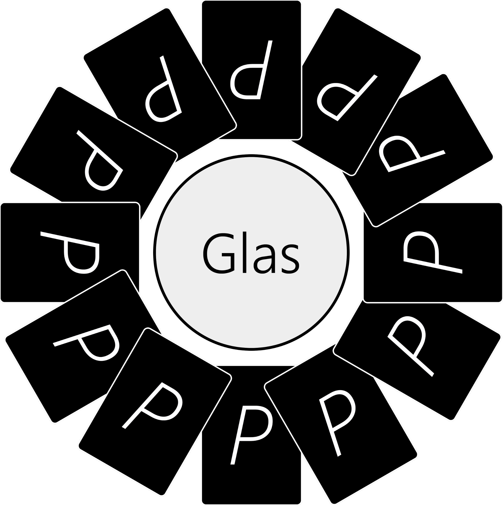

Ring of Fire
Antal spelare
Minst 2 st. Rekommenderat 5-10 st.
Du behöver
Kortlek, något att dricka.
Beskrivning
Alla korten läggs i en cirkel runt ett glas (se figur).

Spelarna sitter i en ring och turas om att dra kort,
Qwanstareglerna för dragna kort är:
2: Dela ut 2 klunkar.
3: Drick 3 klunkar själv.
4: Alla kvinnor dricker.
5: Köra bil, åka spårvagn, köra motorbåt eller köra roddbåt.
Fordonen är sorterade efter svårighetsgrad där bilen är lättast och roddbåten svårast. Det är även väldigt uppmuntrat att hitta på egna fordon och som alla vet är entusiasm det absolut viktigaste när man kör ett fordon!
Köra bil: Spelaren som drog kortet startar bilen på ett festligt sätt. Efter det håller alla spelarna upp händerna framför sig som om de höll i en ratt. Spelaren som drog kortet säger sedan “Brumm!” och svänger åt valfritt håll. Turen går då vidare till spelaren som sitter åt det håll den första spelaren svängde. Om spelaren som har turen vill skicka åt samma håll som tidigare spelare säger den med “Brumm!” och svänger åt samma håll, annars säger den “Eeeeh!” (tänk dig ljudet av däck som skriker) och vrider ratten åt andra hållet. Man kan även välja att tuta. Då säger man “Tut Tut!” och trycker i mitten av sin ratt två gånger som om man tutade, då fortsätter turen åt samma håll men man hoppar över nästa spelare. Den som först misslyckas får dricka ett par klunkar.
Åka spårvagn: Samma som att köra bil men istället för att tuta i tutan drar man i snöret ovanför sig och säger “Ding Ding!”.
Åka motorbåt: Samma regler som att köra bil men istället för att ha en ratt har man nu ett roder. Tänk på att om man svänger åt höger åker man till vänster (och vice versa) då man åker båt!
Åka roddbåt: Samma som att köra motorbåt men istället för att ha ett roder har man istället två åror. På roddbåtar brukar det inte finnas någon tuta, då får man istället exempelvis skrika “ÖÖH!” eller “KNÖ DAJ!”. Istället för att säga “Brumm!” och “Eeeeh!” säger man nu istället “Swishh!” respektive “Swoshh!”.
6: Alla män dricker.
7: Alla pekar upp i luften, den sista som gör det får dricka.
8: Välj en kompis. När du dricker, dricker din vän (detta gäller endast klunkar som delats ut via spelet). Man kan även välja att köra båda vägarna, dvs att om din kompis dricker får du också dricka.
9: Rimma! Säg ett ord, i tur och ordning säger spelarna ett rim på detta ord. Den första som misslyckas får dricka. Om den första spelaren efter den som drog kortet inte kan rimma på ordet får den som drog kortet komma på ett nytt ord.
10: Kategori! Säg en sak i en kategori (exempelvis ett øl-märke). I tur och ordning säger spelarna saker som tillhör samma kategori. Den första som inte kan komma på en sak eller säger samma sak som någon redan sagt får dricka. Om den första spelaren efter den som drog kortet inte kan komma på en sak i kategorin får den som drog kortet komma på en ny kategori.
Exempel på klassiska kategorier:
1. Länder i Europa/Asien/Afrika
2. Sprit/øl/vin-märken
3. Programmeringsspråk
4. Landskap i Sverige
5. Skånska ord
J: Regel! Säg en regel som skall gälla till spelets slut. Om man bryter mot regeln får man dricka. Regeln kan vara vad som helst, men folk kommer tycka att du är dryg om du tar något absurt eller tråkigt och kommer antagligen ta bort dig som vän på MySpace.
Exempel på klassiska regler är:
1. Man får inte använda engelska ord.
2. Att man måste göra något varje gång innan man dricker, till exempel ta av tomten från glaset.
3. Man får inte använda några namn.
4. Alla från Skåne måste rulla sina “R”, resten måste uttala sina “R” som man gör i Skåne.
5. På ett specifikt kort måste man göra något. Exempelvis att på sjuan måste alla nollor vrida sin Cheps bak och fram, den som gör det sist får dricka
D: Question Master! Om denna spelare ställer en fråga och någon svarar måste spelaren som svarade dricka. Om spelaren istället svarar “Fuck you Question master!” måste dock Question Mastern dricka. Det får endast finnas en Question Master.
K: King’s Cup! Häll i en trevlig mängd av din dricka i glaset. Den som får sista kungen måste dricka upp det som finns glaset. Om man känner sig extra modig i början av leken kan man välja att
grunda King’s Cup genom att hälla i några centiliter starksprit eller annan kul dricka.
A: Vattenfall! Alla börjar dricka,
spelaren till vänster om den som tog kortet slutar dricka när den vill, personen efter får då lov att sluta, och så vidare.
Spelaren som tog esset slutar alltså sist!
Om cirkeln bryts måste spelaren som bröt den dricka 10 klunkar. Detta kan endast hända 2 gånger under spelets gång, efter det gäller regeln inte längre.